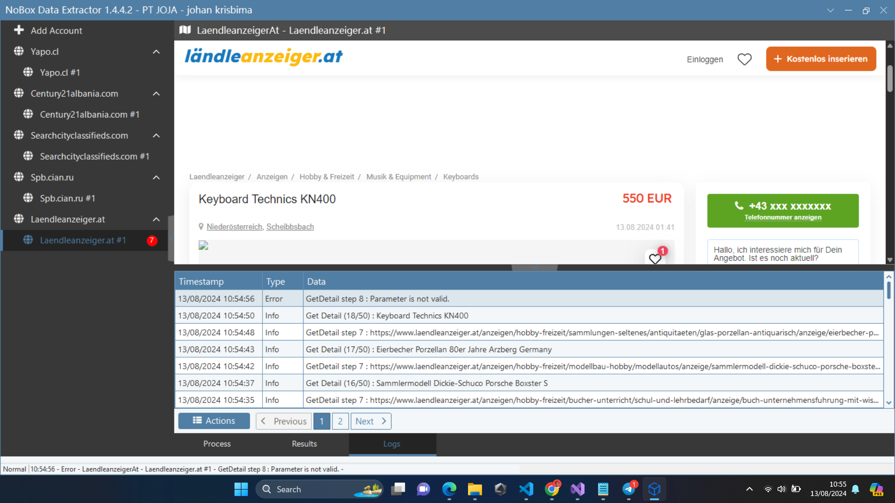

Project: Web Scraping for Nobox Extractor App – PT Universal Big Data
Pengembangan dan pemeliharaan aplikasi desktop untuk ekstraksi data publik dari berbagai situs e-commerce global menggunakan teknik web scraping serta integrasi cloud platform Nobox AI.
Ringkasan Proyek (Berdasarkan CV Resmi)
1. Latar Belakang Masalah & Kebutuhan Data
Model kecerdasan buatan Nobox AI membutuhkan asupan data tren pasar yang segar, luas, dan terstruktur setiap harinya. Pengumpulan data secara manual tidak realistis untuk skala ratusan ribu produk. Beberapa tantangan teknis utama yang harus dipecahkan meliputi:
2. Solusi Teknis & Fitur Unggulan
Untuk mengatasi kendala di atas, saya merancang arsitektur aplikasi modular dengan pemisahan antara antarmuka pengguna (UI), mesin ekstraktor asynchronous, dan pipeline persistence database:
Multi-Threaded Asynchronous Engine
C# Async / Await & Task Parallel LibraryMemisahkan thread rendering UI dari thread HTTP crawler sehingga antarmuka tetap responsif 60 FPS meskipun sedang mengekstrak ribuan baris data secara simultan.
Smart DOM Parser & Sanitizer
Normalisasi & Validasi Data OtomatisEkstraksi atribut esensial produk: judul listing, harga mata uang lokal/internasional, rating, lokasi seller, nomor kontak, serta deskripsi spesifikasi.
Bulk Pipeline Sync ke Nobox AI
MySQL Batch Inserts & Cloud IntegrationAlih-alih melakukan query insert satu-per-satu yang membebani I/O, saya mengimplementasikan sistem batching buffer untuk sinkronisasi massal.
Anti-Throttling & Proxy Support
Ketahanan Sistem & Kestabilan CrawlingMeniru pola browsing manusia melalui variasi user-agent acak, random request delay interval, dan rotasi proxy HTTP/SOCKS5.
3. Dokumentasi Tampilan Aplikasi Nobox Extractor
Berikut adalah tampilan aplikasi desktop Nobox Extractor saat menjalankan proses ekstraksi data produk e-commerce:


4. Dampak & Hasil Nyata (Impact)
Pengembangan aplikasi desktop Nobox Extractor memberikan kontribusi signifikan terhadap efisiensi pengumpulan data kecerdasan buatan:
5. Pembelajaran Utama (Key Takeaways)
Mengembangkan Nobox Extractor di PT Universal Big Data memberikan wawasan mendalam mengenai teknik web scraping modern, pemrosesan data asinkronus skala besar, dan arsitektur desktop multithreading.
Pelajaran paling bernilai adalah merancang kode ekstraksi yang tangguh (fault-tolerant): selalu mengantisipasi perubahan struktur DOM situs pihak ketiga, menangani kegagalan jaringan secara anggun (graceful degradation), dan menjaga kebersihan data sebelum disimpan ke database inti.